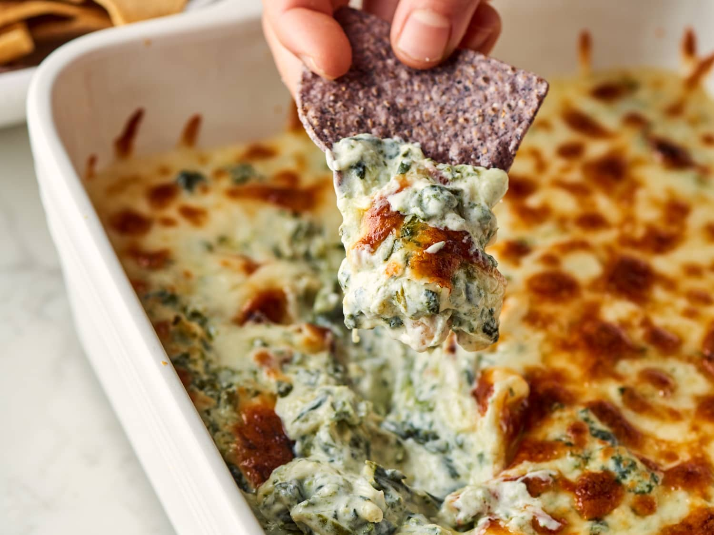

Spinach Artichoke Dip

Description
This dip is a party treat and must have at all happy hours
Ingredients
The following list of ingredients and steps come from thekitchn.com
- Cooking spray
- 1 (10-ounce) package frozen chopped spinach, or 12 ounces fresh baby spinach
- 1 (14-ounce) can or jar artichoke hearts packed in water
- 3 medium scallions
- 2 cloves garlic
- 4 ounces low-moisture mozzarella cheese, shredded (1 cup) and divided
- 1 ounce Parmesan cheese, grated (1/4 cup)
- 8 ounces cream cheese
- 1 cup sour cream (8 ounces)
- 1/2 cup mayonnaise
- 1/2 teaspoon kosher salt, plus more as needed
- 1/4 teaspoon freshly ground black pepper
- Finely grated zest of 1 medium lemon
- Crackers, tortilla chips, baguette slices, crostini, or crudités, for serving
Steps
- Heat the oven to broil. Arrange a rack 5 to 6 inches from the broiler element. Heat the oven to broil. Coat an 8x8-inch broiler-safe baking dish with cooking spray.
- Prepare the spinach. If using frozen spinach, place 10 ounces in a microwave-safe bowl and microwave in 1-minute bursts until defrosted. If using fresh spinach, blanch 12 ounces in a large pot of boiling water until wilted, then drain and rinse with cold water.
- Dry and chop the spinach. When cool enough to handle, squeeze all the excess moisture from the spinach. If using fresh spinach, coarsely chop it. Place the spinach in a large saucepan.
- Chop the artichokes, scallions, and garlic. Drain the artichokes and chop into bite-sized pieces. Thinly slice 3 scallions and mince 2 garlic cloves. Add everything to the saucepan.
- Grate the cheeses. Shred 4 ounces mozzarella cheese (1 cup) and grate 1 ounce Parmesan cheese (1/4 cup). Add the Parmesan and 1/2 cup of the mozzarella to the saucepan.
- Add the creamy ingredients and seasoning. Cut 8 ounces cream cheese into 8 pieces. Add the cream cheese, 1 cup sour cream, 1/2 cup mayonnaise, 1/2 teaspoon kosher salt, and 1/4 teaspoon black pepper to the saucepan.
- Heat until melted and smooth. Cook the dip over medium heat, stirring frequently, until the cream cheese is melted and the dip is evenly combined and steaming, about 8 to 10 minutes. Meanwhile, finely grate the zest of 1 lemon.
- Cook the dipAdd the lemon zest. Remove the dip from the heat and stir in the lemon zest.
- Top with more cheese and broil until browned. Transfer the dip to the baking dish and spread into an even layer. Sprinkle with the remaining 1/2 cup mozzarella cheese. Broil until the cheese on top is melted golden brown, 3 to 5 minutes. Serve warm with crackers, tortilla chips, baguette slices, crostini, or crudités.